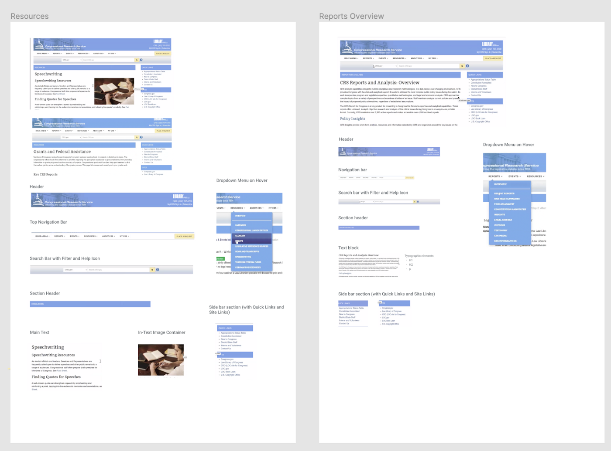
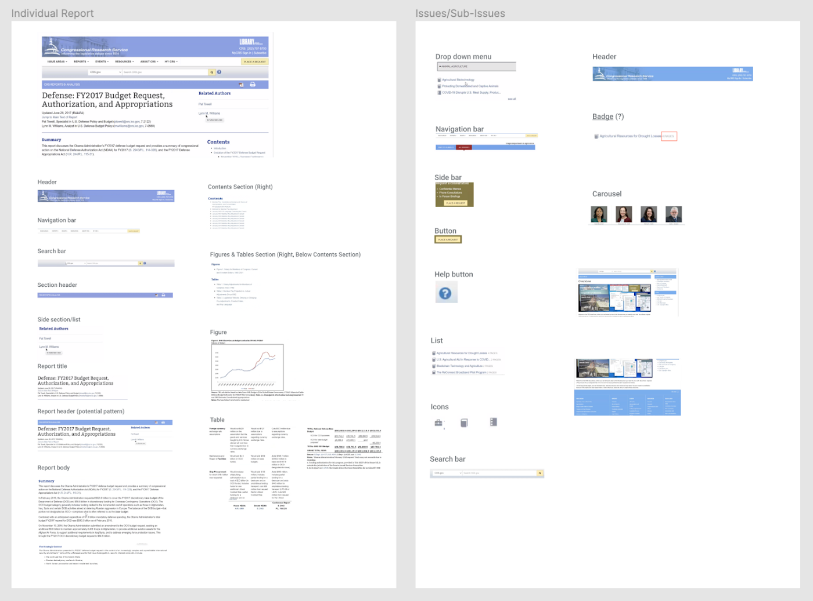

Crafting a Design System for the Congressional Research Services
Client
Library of Congress — Congressional Research Services
Team
Team of 5 UMD HCIM students
My Role
Visual designer, UX researcher
Timeline
Jan — May 2021
Tools
Figma, Miro & Google Design Sprint (adapted)
Background
The Library of Congress is the oldest federal cultural institution in the United States. Its collections include millions of books, recordings, photographs, newspapers, maps, and manuscripts. One of the library’s missions is to research inquiries made by members of Congress, which is carried out through the Congressional Research Service (CRS), a public policy research institute of the United States Congress. Operating within the Library of Congress, it works primarily and directly for members of Congress and their committees and staff on a confidential, nonpartisan basis.
The Library of Congress is redesigning CRS.gov. As part of that process, they need to develop a Design System in Figma based on the CRS brand and the USWDS guidelines.* The design system would then be used to create high-fidelity mockups of key CRS.gov pages.
* USWDS (U.S. Web Design System) is a toolkit of principles, guidance, and code that makes it easier to build accessible, mobile-friendly government websites.
To help LOC achieve this objective, our team worked on creating a detailed design system together with documentation. In addition, the team utilized the design system to create mockups of specific CRS pages and validate the design decisions through user research and evaluation.
Process
Adapting the design sprint
For this project, we took the Google Design Sprint framework, which is originally “a five-day process for answering critical business questions through design, prototyping, and testing ideas with customers.” It consists of 5 stages corresponding to 5 weekdays: map, sketch, decide, prototype, and test.
To properly use the Design Sprint within the constraint of our course schedule, we adapted the framework into a 4-week process, in which the sketch and decide phases are condensed. Throughout this entire project, we conducted a total of 3 sprints.
Discovery
We first tried to understand the problem by interviewing stakeholders from LOC who have deep insights into CRS.gov. During the interviews, we discussed the challenges with CRS.gov’s current design, the state of the overall design process, and relevant constraints.
From our interviews, we discovered patterns related to the challenges with the current CRS.gov design:
The current CRS.gov design is outdated and doesn’t meet contemporary web design best practices.
The new CRS.gov design needs to follow the USWDS guidelines.
The dense and complex information provided on CRS.gov needs to be presented in a readable and discoverable way.
CRS.gov needs to convey a sense of high-quality service to its Congressional users.
To understand the workflows surrounding a design system, we also interviewed 2 product designers and 1 front-end developer. We eventually created user journey maps for designer and developer personas to identify the major pain points as well as opportunities for the design system we were creating:
Based on the identified pain points, we developed opportunities that could be incorporated into our solution and voted on the most relevant points. For designers, we decided to focus on the following:
Provide clear design principles with easily understandable wordings and a coherent structure to follow
Offer more flexibility for designers when using the design system by providing alternative options and encouraging readers to use discretion when needed (research on examples)
Clearly state different use cases of components and patterns in the documentation
For developers, we narrowed the opportunities down to:
Create well-organized and easily readable documentation (e.g.: following alphabetical order, including table of contents)
Make sure that documentation contains enough information about how/why/when to use components (include examples, do’s and don’ts)
Maintain consistent organization in both Figma and Confluence that responds well to large amounts of new additions
Toward the end of the discovery process, with all of our findings from the steps taken, we identified the following goals that served as our north star throughout the project:
Adapt the USWDS to the CRS brand in order to convey a sense of expertise through the CRS.gov design system
Create a design library in Figma that is organized and easy to navigate
Provide clear guidelines and relevant resources while ensuring readability in the design system documentation
Validate and refine design choices through thorough benchmarking and user research
Researching Other Solutions
We conducted a comparative analysis to look at services that are similar to CRS.gov in terms of mission or functionality to find inspiration for our solutions: AEI, Aspen Institute, Brookings, CATO, and The Heritage Foundation. From our research, the most valuable finding we got was that websites offering similar solutions to CRS.gov have a much more modern, clean look, which is characterized by generous white space, contemporary typography, and high-quality images.
To familiarize ourselves with design system best practices, we also looked at industry-standard systems such as the USWDS itself, Google Material Design, and Apple Human-Interface Guidelines. These explorations informed us on design system organization, usability recommendations, and accessibility guidelines.
Designing & Documenting
To start working on the CRS.gov design system, we first conducted a UI inventory on the current CRS.gov website to identify all the reusable UI elements that need to be included in the design system.
 We decided to work on the design components and patterns using Figma while documenting them in Confluence.
The Figma file houses the design library including typography styles, color palette, components, patterns, and templates.
The Confluence space provides documentation on specs, usage, usability, and accessibility guidelines. These two living documents offer intuitive navigation and a clear presentation of information throughout the design system.
As we started building out the design system from the most basic elements to more complex ones, we frequently communicated with our client in order to get their feedback, while simultaneously conducting internal critique sessions to give each other pointers.
Evaluation
To identify the strengths and shortcomings of our design solutions, we tested the design system with LOC's designers and developers—who will be working with the design system. We conducted 6 sessions with 3 designers, 2 developers, and 1 digital accessibility specialist.
Findings on the Figma design library
Strengths:
The variant function is well organized.
The information hierarchy is well organized.
Design components are separate from the documentation.
Weaknesses:
Some confusion when locating patterns.
The format of component designs needs to be unified and improved.
Some naming conventions of components are too technical for designers.
Certain components lack hover & selected state.
Findings on the documentation in Confluence:
Strengths:
The documentation is well organized and easy to navigate.
Figma frames linked in the documentation are helpful.
Accessibility guidelines are helpful.
Weaknesses:
Lacks guidelines on when to use / not use a component.
Illustrations of do’s and don’ts in the guidelines would be helpful.
Guidelines on transitions for interactive components and illustrations of these components would be useful.
With the key findings, we discussed among our teams to iterate and make incorporate necessary changes into our design system.
Final Design
The final CRS design system is based on the following design principles:
Usability
Promote ease-of-use across platforms and devices.
Accessibility
Ensure that diverse needs are addressed.
Readability
Present information that can be easily processed.
Discoverability
Enable users to identify and utilize available functionalities.
High-Quality Experience
Reflect CRS’s top quality service.
For the typography, we chose EB Garamond and Public Sans, which are elegant, neutral and readable typefaces to reflect CRS’s prestige brand and allow for legibility of the dense information on CRS.gov:
The color palette was heavily inspired by the existing CRS brand. The primary and secondary colors stay mostly similar with the blue and yellow variants. We added accent and state colors to account for other digital use cases for the CRS.gov website.
With the color palette, we initially got negative opinions on the secondary color, which was inspired by the original one in the CRS print-based brand guidelines. Understanding that this hue may not work well digitally, our team experimented with various hues in the same color realm, until we reached a final agreed-upon solution with the client.
For optimal organization, the CRS design system consists of 2 parts: a design library in Figma and the documentation in Confluence.
In Figma, we organize the design library using a separate page for each item. We then list them under the 4 main categories: style guide, components, patterns, and templates. Within each category, we list the pages alphabetically to aid discoverability.
The Figma file is divided into pages that contain style guide elements, components, and patterns.
Each component or pattern has its own variants or states corresponding to different use cases.
In Confluence, the pages are organized similarly to Figma to allow for intuitive navigation:
Users can navigate from page to page using the left-side panel, similar to the Figma design library.
The Confluence documentation includes further explanation of the style guide, usability guidelines, and accessibility guidelines.
Each page features a table of contents with linked sections to help viewers quickly scan the information and find what they need. For the design illustrations, we decided to use a Figma viewer plugin, which shows an embedded Figma frame for each component/pattern exactly as it is in Figma. This way, when there are any updates on the Figma side, these items get automatically updated in Confluence to reflect the latest changes.
Reflection
Overall, this was a project full of design, usability and technical nuances. Due to various factors, we faced three main issues throughout the project, which gave us major learning opportunities:
With a Confluence free plan, it was challenging for us to properly format the page layout. As a result, some of the pages aren’t as organized as optimally as we would like to. Another issue we had with Confluence was that the embedded Figma frames don’t always accurately reflect the selected content, occasionally showing irrelevant surrounding assets. Moreover, Confluence pages with Figma frames often take time to load.
Secondly, implementation is out of scope for this project, as none of us has professional programming experience. A design system would normally contain code snippets and relevant implementation guidelines for each component/pattern. However, we tried our best to set up the design system in a way that would allow for efficient addition of code elements in the future.
Thirdly, within the time constraint, we didn’t have the chance to include a few important parts of the design system, which we are now planning as stretch goals to be accomplished by the CRS team in the future. For example, several interactive components are currently represented as separate static states without documentation on their transition styles. Additionally, the mockups we created are all for desktop, so future work on mobile versions would be needed to account for responsiveness.